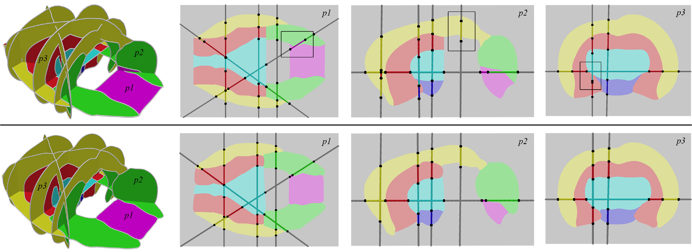
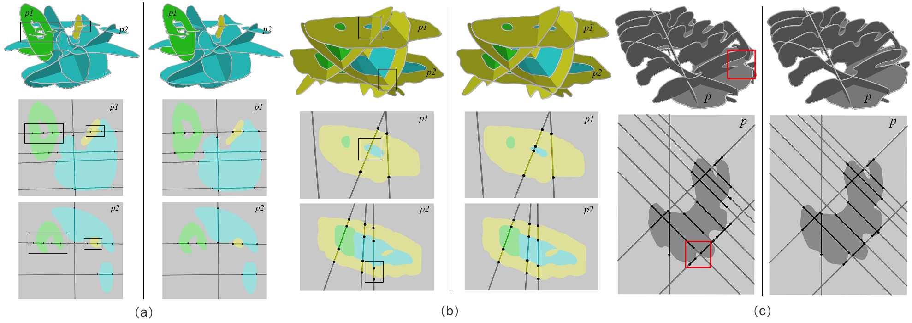

Repairing Inconsistent Curve Networks on Non-parallel Cross-sections
Publication:
Computer Graphics Forum (Proc. Eurographics 2018)
Authors:
Zhiyang Huang*, Michelle Holloway*, Nathan Carr^, Tao Ju*
Affiliations:
*Washington University in St. Louis, ^Adobe

Result
(bottom) of repairing an inconsistent 7-labelled mouse brain set (top),
showing the labeling on three planes (p1,p2,p3) and labeling on other
planes along the intersection lines. A few inconsistencies are
highlighted in black boxes. The pictures at the right show the labeling
on each plane as well as the labeling from the other plane on
intersection lines.
(Mouse brain: 6 planes, 7 labels, total process time 421s)
 Gallery: Results of repairing inconsistency on different complex examples
(a) Liver 1: 6 planes, 4 labels, total process time 90s, (b) Liver 2: 5
planes, 4 labels, total process time 25s, (c) Ferret brain: 10 planes,
2 labels, total process time 66s.
Abstract
In
this work we present the first algorithm for restoring consistency
between curve networks on non-parallel cross-sections. Our method
addresses a critical but overlooked challenge in the reconstruction
process from cross-sections that stems from the fact that
cross-sectional slices are often generated independently of one
another, such as in interactive volume segmentation. As a result, the
curve networks on two non-parallel slices may disagree where the slices
intersect, which makes these cross- sections an invalid input for
surfacing. We propose a method that takes as input an arbitrary number
of non-parallel slices, each partitioned into two or more labels by a
curve network, and outputs a modified set of curve networks on these
slices that are guaranteed to be consistent. We formulate the task of
restoring consistency while preserving the shape of input curves as a
constrained optimization problem, and we propose an effective solution
framework. We demonstrate our method on a data-set of complex
multi-labeled input cross-sections. Our technique efficiently produces
consistent curve networks even in the presence of large errors.